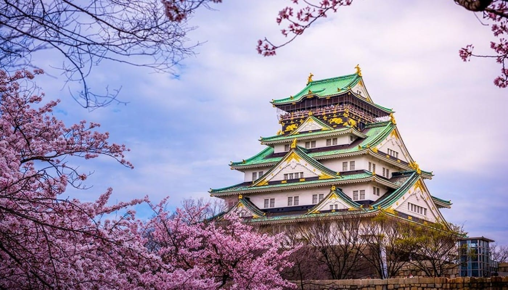
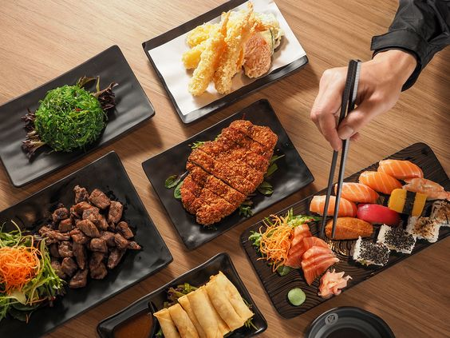

Our Menu
Minuman

Matcha Latte
Smooth blend of matcha and creamy milk.

Iced Tea
Refreshing cold green tea with a hint of lemon.
Hey, our delicious food is waiting for you.
We are always near with fresh and tasty dishes.
Smooth blend of matcha and creamy milk.
Refreshing cold green tea with a hint of lemon.
Di Yume Kitchen, kami terinspirasi oleh keindahan dan keunikan budaya Jepang. Kami percaya bahwa makanan bukan hanya sekadar untuk memuaskan rasa lapar, tetapi juga untuk membawa kebahagiaan dan kenangan yang indah.
Kami menerapkan prinsip keseimbangan dan harmoni dalam setiap hidangan yang kami sajikan. Kami percaya bahwa keseimbangan antara rasa, tekstur, dan presentasi akan menciptakan pengalaman kuliner yang sempurna.
.jpeg)
Setiap hidangan di Yume Kitchen adalah sebuah karya seni yang indah dan lezat. Kami menggunakan bahan-bahan segar dan berkualitas, serta teknik memasak yang tradisional dan inovatif, untuk menciptakan hidangan yang tidak hanya lezat, tetapi juga memuaskan secara visual dan tekstur.
"Yume" berarti Mimpi dalam bahasa Jepang, dan kami memilih nama ini karena kami ingin restoran kami menjadi tempat di mana mimpi tentang makanan yang lezat dan pengalaman kuliner yang indah menjadi kenyataan. Kami berharap setiap hidangan di Yume Kitchen dapat membawa kebahagiaan dan kenangan yang indah bagi setiap tamu.

Kami mengundang Anda untuk bergabung dengan kami di Yume Kitchen dan merasakan kelezatan makanan Jepang yang autentik. Kami berharap dapat menyambut Anda di restoran kami dan membagikan filosofi kami tentang keseimbangan, harmoni, dan kebahagiaan.